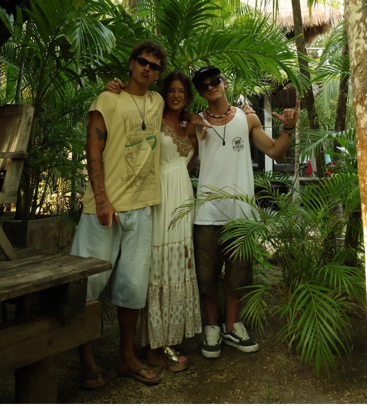
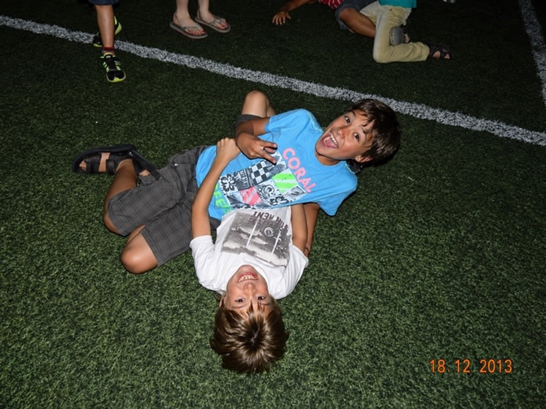

cómo funciona.
- Contás qué buscásUnas preguntas cortas sobre qué te trae y cómo querés que te acompañen.
- Te sugerimos profesionalesPersonas que trabajan lo que buscás, de la forma que te sirve.
- Reservás desde la appElegís el horario y pagás ahí mismo, con Mercado Pago.
- Te conectásLlegás a tu videollamada desde la app, en el horario que elegiste.
un vistazo adentro.
Encontrar con quién hablar, conocerte un poco más o hacer una pausa.
Profesional de ejemplo
Psicología · Enfoque cognitivo conductual
Elegí un horario
Contame cómo venís
Un toque alcanza. Si querés, escribí algo más.
Hoy me costó arrancar, pero a la tarde salí a caminar y me hizo bien.
Esta semana
Respiración
Seguí el círculo.
Inhalá 4, mantené 4, exhalá 4, mantené 4
Vistas ilustrativas de las experiencias de Vita. El perfil y los datos son de ejemplo.
Más herramientas y temas para explorar
Un momento para vos
Diario, gratitud, respiración, meditación, anclaje, escáner corporal, relajación, sueño, sonidos ambientales y lecturas breves.
Lo que te trae hoy
Ansiedad y estrés, autoestima, relaciones, descanso, hábitos, propósito, momentos de cambio y más.
probá un momento de Vita.
Entre una sesión y otra, Vita te acompaña con momentos cortos. Arranca como en la app, con una pregunta.
¿Cómo venís hoy?
Acá no se guarda nada. En la app, queda en tu registro del día.
Vita existe para que, en un momento difícil, sepas a quién acudir.
Acercamos a quienes buscan acompañamiento con profesionales que tienen mucho para ofrecer.
Conocé por qué la hicimoslo que conviene saber antes.
¿Cuánto cuesta?
Descargar Vita es gratis. Pagás solo las sesiones que reservás, al precio que fija cada profesional y que ves antes de reservar. Se paga desde la app, con Mercado Pago.
¿Quiénes son los profesionales?
Psicólogos, coaches y nutricionistas que atienden online. Revisamos a mano cada postulación antes de que aparezca en Vita, y cuando alguien carga su matrícula o su título, revisamos el documento. En cada perfil ves qué quedó verificado. Los coaches y nutricionistas se comprometen a derivar lo que necesite atención clínica.
¿Cómo elijo con quién hablar?
Respondés unas preguntas cortas y te sugerimos profesionales que trabajan lo que buscás. En cada perfil ves su enfoque, su formación y sus horarios, y elegís vos.
¿Y si la primera sesión no me sirve?
Si la primera sesión con un profesional no te convence, te devolvemos lo que pagaste. Escribinos a vitaappar@gmail.com dentro de las 48 horas, sin explicar por qué. Vale una vez por persona.
¿Puedo cancelar?
Sí, desde la app. Con 24 horas o más de anticipación te devolvemos todo. Si faltan menos de 24 horas, la sesión se cancela pero no hay reembolso, salvo que el profesional la cancele por vos.
¿Cómo es la sesión?
Por videollamada. A la hora de la sesión tocás "Entrar a la sala" en la app y se abre. No tenés que instalar nada más.
¿Qué pasa con lo que escribo?
Tu registro de ánimo, tu diario y tu gratitud no se comparten con tu profesional ni con nadie, salvo que decidas mandarlos. Los mensajes con tu profesional no los ve ningún otro usuario, pero no tienen cifrado de extremo a extremo. El detalle está en la Política de Privacidad.
¿Vita reemplaza una terapia?
No. Vita guía, no diagnostica: te acerca herramientas y personas, y lo clínico queda en manos de profesionales. Tampoco es un servicio de emergencias. Si estás en riesgo, llamá a la Línea de Salud Mental al 0800-999-0091 o al 911.
¿sos profesional?
Si acompañás a otras personas desde la psicología, el coaching o el bienestar, Vita te da un lugar para que te encuentren por cómo trabajás.
- Tu agenda y tus reservas, en un solo lugar.
- Cobros dentro de la app.
- La sala de videollamada de cada sesión se arma sola.
- Un perfil que cuenta tu enfoque, no solo tu título.
Sin costo fijo. Vita cobra una comisión solo por las sesiones que das: 20% la primera con cada persona y 15% desde la segunda. Si alguien llega por tu propio link, la primera no tiene comisión.
Estamos sumando a los primeros profesionales.


encontrarnos fue el comienzo.
Somos Andre y Joaquín, dos hermanos de Córdoba, Argentina. Tenemos maneras distintas de ver el mundo y recorridos que nos llevaron por caminos diferentes. En el desarrollo personal encontramos algo que nos apasionaba a los dos y una oportunidad de volver a acercarnos.
Sabemos lo que significa contar con alguien. Nuestra hermana Sofía nos acompañó a la distancia, creyó en nosotros y nos acercó herramientas y personas que nos ayudaron en momentos difíciles. Tuvimos esa suerte. También sabemos que muchas personas atraviesan esos momentos sin saber a quién acudir.
Vita empezó como una idea de Andre, después de vivir lo mucho que puede ayudar encontrar acompañamiento y lo difícil que puede ser volver a acceder a él. Una conversación con Joaquín abrió nuevas posibilidades para el proyecto. Empezamos a construir juntos y, en ese proceso, también nos reencontramos como hermanos.
Queremos acercar a quienes buscan acompañamiento con quienes tienen mucho para ofrecer. En Argentina hay profesionales capaces que necesitan un lugar donde mostrar cómo trabajan, llegar a otras personas y desarrollar su vocación.
Vita nace de querer compartir algo de lo que recibimos: la posibilidad de encontrar herramientas, conocer a alguien que pueda acompañarte y dar un primer paso.
En la app, "Sofía" es la voz que te habla en el inicio. Son mensajes automáticos, escritos con el cariño con que ella nos acompañó. No es una persona del otro lado.
empezá cuando quieras.
Vita es gratis para descargar. Pagás solo las sesiones que reservás.